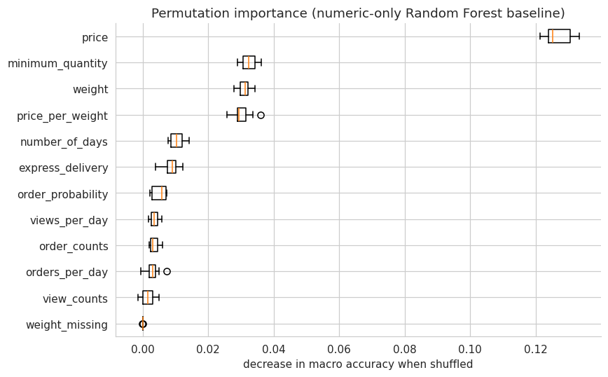

Part 2 of the challenge asks for a supervised proof-of-concept classifier that assigns a product to its category, using at least one text feature and one numeric feature. The spec is explicit that raw predictive performance isn’t the point: “we are primarily interested in understanding your reasoning and methodology,” including approaches that didn’t work.
Two scope decisions, made up front
The 2021 version of this notebook made a choice worth revisiting before writing any code: it used the search query as the text feature, reasoning ahead to the fact that the eventual system (Part 5) only ever receives a query at inference time, not a product’s tags. This notebook makes the opposite choice, for two reasons:
The spec keeps these problems separate. Part 5 explicitly calls out “classify a query as if it were a product… no numerical features are available; you should explore how to handle this limitation” as its own problem, distinct from Part 2. Solving it here would be answering a question this notebook wasn’t asked.
title and concatenated_tags are the product’s actual description. They’re richer, longer, and (per notebook 01) verified stable per product, unlike a search query, which is a behavioral signal (what someone typed to find this product), not a description of the product itself.
So: this notebook classifies products using title + concatenated_tags as the text feature. Notebook 05 (System Integration) picks up the harder “classify a query as if it were a product, without numeric features” problem, exactly where the spec puts it.
The second decision concerns what a row is. Notebook 01 established that a row is a click, not a product (29,801 distinct products across 38,507 rows). This notebook deduplicates to one row per product before doing anything else; the reasoning is laid out in full in §2.
Questions this notebook answers
Deduplication: how much does collapsing clicks to products change the data, and does it change the category imbalance we need to design around?
Numeric-only baseline: how well does a classifier do with only the product’s numeric attributes, and which of them actually matter?
Text vectorization: TF-IDF or the hashing trick, and why did the 2021 notebook get this comparison wrong?
Combined model comparison: text and numeric features together, across a few algorithms, with and without feature scaling.
Best model deep dive: is the default hyperparameter already good, and which categories does the winning model still confuse?
Key findings & handoff: what gets saved for notebook 05?
1. Setup
We load the cleaned dataset notebook 01 persisted (src.data.load.load_processed_dataset), rather than re-deriving it from the raw CSV as the 2021 notebook did. Text and modeling helpers come from src.features.text and src.models.classifier, so the pipeline built here is the same one notebook 05 will load, not a one-off.
Code
import numpy as npimport pandas as pdimport seaborn as snsimport matplotlib.pyplot as pltfrom scipy import sparsefrom sklearn.ensemble import RandomForestClassifierfrom sklearn.feature_extraction import FeatureHasherfrom sklearn.feature_extraction.text import TfidfVectorizerfrom sklearn.impute import SimpleImputerfrom sklearn.inspection import permutation_importancefrom sklearn.metrics import ( ConfusionMatrixDisplay, accuracy_score, classification_report, confusion_matrix, f1_score,)from sklearn.model_selection import RandomizedSearchCV, train_test_splitfrom sklearn.neighbors import KNeighborsClassifierfrom sklearn.pipeline import Pipelinefrom sklearn.preprocessing import StandardScalerfrom sklearn.svm import LinearSVCfrom src.data.load import load_processed_datasetfrom src.data.preprocess import deduplicate_productsfrom src.features.text import joined_tokensfrom src.models.classifier import NUMERIC_FEATURES, TEXT_FEATURE, build_pipeline%matplotlib inlinePRIMARY ="#2a78d6"# Blue, the default single hue for magnitude comparisons.SECONDARY ="#eb6834"# Orange, the second series whenever a chart compares exactly two things.sns.set_style("whitegrid")plt.rcParams["figure.dpi"] =110plt.rcParams["axes.spines.top"] =Falseplt.rcParams["axes.spines.right"] =FalseRANDOM_STATE =42df = load_processed_dataset("01_data.parquet")print(f"{df.shape[0]:,} rows x {df.shape[1]} columns")
38,480 rows x 24 columns
2. Deduplicating to product level
Notebook 01’s finding was that a row is a click, not a product. For Part 2’s actual task, “product -> category”, repeat clicks on the same product are not new information for category, title, or concatenated_tags; they’re the same product, described the same way, clicked more than once. Before splitting anything, we verify that directly:
Code
constant_check = df.groupby("product_id")[["category", "title", "concatenated_tags"]].nunique()print("products where category/title/tags vary across rows:")print((constant_check >1).sum())varying_check = df.groupby("product_id")[["price", "weight"]].nunique()print("\nproducts where price/weight vary across rows:")print((varying_check >1).sum())
products where category/title/tags vary across rows:
category 0
title 0
concatenated_tags 0
dtype: int64
products where price/weight vary across rows:
price 5781
weight 5287
dtype: int64
As expected: zero products have more than one distinct category, title, or concatenated_tags across their rows, they really are pure product attributes. price and weight do vary for a few thousand products (most likely price changes and re-measurements over the window the sample was drawn from), a real data quirk, but out of scope to reconcile here: we keep one row per product and accept the small information loss.
From here on, this notebook works exclusively with dedup, one row per product. Everything computed on df (rows/clicks) belonged to notebook 01; everything from here on is about products.
3. Target distribution and train/test split
Does deduplicating change the category imbalance notebook 01 already flagged? We compare the row-level and product-level distributions directly.
The imbalance eases slightly (popular categories like Lembrancinhas get clicked more per product than rarer ones) but stays severe, roughly 15:1 at the product level. Whatever evaluation metric we lead with has to be robust to this, which is exactly the concern the 2021 notebook’s accuracy-first framing didn’t address (see §7).
Every model in this notebook is compared on the same stratified train/test split, fixed once here and reused throughout, so comparisons across sections are apples to apples.
Before touching text, we establish what the product’s numeric attributes alone can do, and which of them actually carry signal. This mirrors a technique the 2021 notebook used well: permutation_importance to rank features by how much shuffling each one hurts the model, rather than assuming importance from a correlation table.
A Random Forest with the current scikit-learn default (n_estimators=100, not the old default of 10 the 2021 notebook used) and a fixed random_state is the baseline model. Missing weight/price_per_weight values (see weight_missing from notebook 01) are median-imputed inside the pipeline, fit on the training fold only.
precision recall f1-score support
Bebê 0.48 0.43 0.45 1362
Bijuterias e Jóias 0.52 0.23 0.32 215
Decoração 0.54 0.67 0.60 1846
Lembrancinhas 0.76 0.87 0.81 3191
Outros 0.32 0.07 0.11 256
Papel e Cia 0.37 0.08 0.14 575
accuracy 0.63 7445
macro avg 0.50 0.39 0.40 7445
weighted avg 0.60 0.63 0.60 7445
macro-F1 : 0.403
accuracy : 0.630
63% accuracy looks respectable in isolation, but macro-F1 (which weights every class equally rather than by size) tells a different story: 0.40. The model is mostly succeeding at the majority class, Lembrancinhas (F1 0.81), and struggling badly on the smaller ones (Outros F1 0.11, Papel e Cia F1 0.14). This is the imbalance from §3 showing up directly, and it’s why macro-F1, not accuracy, is this notebook’s headline metric from here on.
Which numeric features is the model actually relying on?
Code
result = permutation_importance( numeric_baseline, X_test_num, test["category"], n_repeats=10, random_state=RANDOM_STATE, n_jobs=-1)order = result.importances_mean.argsort()fig, ax = plt.subplots(figsize=(8, 5))ax.boxplot( result.importances[order].T, vert=False, tick_labels=np.array(numeric_candidates)[order])ax.set_title("Permutation importance (numeric-only Random Forest baseline)")ax.set_xlabel("decrease in macro accuracy when shuffled")fig.tight_layout()plt.show()

price dominates, exactly as in the 2021 notebook’s version of this chart. Three more features clear a visible margin above the rest: minimum_quantity, weight, and price_per_weight. Everything past those four (number_of_days, express_delivery, order_probability, the engagement counts) sits close to zero. We carry the top four forward as NUMERIC_FEATURES (src/models/classifier.py) for the combined model in §6, rather than every candidate: adding near-zero-importance features only adds noise and dimensionality for no benefit.
5. Text vectorization: TF-IDF or hashing?
The 2021 notebook tried TF-IDF, measured a 2,472-column, 724.6 MB dense DataFrame, and abandoned it for FeatureHasher on the strength of that measurement. The measurement was the mistake: it came from calling .todense() on what TF-IDF naturally produces as a sparse matrix, materializing every zero. We repeat the comparison, keeping TF-IDF sparse this time.
First, build the combined product text (title + concatenated_tags, cleaned, stopwords removed, joined into one string per product) via src.features.text.joined_tokens, the same tokenizer used throughout notebook 01.
tfidf = TfidfVectorizer(min_df=2)X_train_tfidf = tfidf.fit_transform(train["product_text"])X_test_tfidf = tfidf.transform(test["product_text"])nonzero_mb = X_train_tfidf.data.nbytes /1e6print(f"TF-IDF matrix: {X_train_tfidf.shape[0]:,} x {X_train_tfidf.shape[1]:,}")print(f"actual sparse memory: {nonzero_mb:.1f} MB (not the {X_train_tfidf.shape[0] * X_train_tfidf.shape[1] *8/1e6:,.0f} MB a dense array would need)")
TF-IDF matrix: 22,333 x 5,549
actual sparse memory: 1.2 MB (not the 991 MB a dense array would need)
A few thousand columns, but under 2 MB of actual nonzero data: nowhere near the earlier measurement’s 724.6 MB. Densifying was the bug, not TF-IDF itself. We now compare TF-IDF against FeatureHasher on equal footing, text only, using LinearSVC for both (fast and sparse-friendly) plus MultinomialNB as a second reference point for TF-IDF specifically: MultinomialNB requires non-negative input, which FeatureHasher’s default alternating-sign scheme doesn’t guarantee, so it isn’t a fair comparison there and is left blank for hashing.
TF-IDF with LinearSVC wins outright, and by a wide margin over even the larger, 1024-feature hasher (which also costs 4x the earlier one’s dimensionality for a worse score). TF-IDF also keeps the one real advantage the 2021 notebook correctly identified for itself: it can be inverted back to words for inspection, which a hashed feature can’t. We carry TF-IDF forward.
6. Combined model comparison
Text (TF-IDF) and the four numeric features selected in §4, combined, across three algorithms, each with and without feature scaling on the numeric side (StandardScaler; TF-IDF output is already on a bounded, comparable scale and is left alone). Every split, seed, and metric here is identical to the rest of the notebook.
KNN is the headline result here. Unscaled, it collapses to macro-F1 well below even the numeric-only baseline: price, ranging into the thousands, swamps the Euclidean distance calculation, drowning out both the TF-IDF signal and the other numeric features. Scaling recovers most of that. This is the concrete demonstration the 2021 notebook’s scaling comparison gestured at but never isolated so clearly, because it never tested a distance-based model against unscaled price directly.
Random Forest is scale-invariant, as expected for a tree-based model: near-identical scores with or without scaling.
LinearSVC is the best model either way, and the one we carry forward, with scaling giving it a small further edge.
One more comparison worth making explicit: how much did adding numeric features actually help, compared to text alone?
text only : macro-F1 = 0.843
text + numeric (best) : macro-F1 = 0.849
Barely different. Product text alone already captures most of what separates these categories; the four numeric features add a small, real, but modest improvement on top. That’s a useful, honest finding in its own right: it says the categories are primarily a language signal (what sellers call their products), and only secondarily a pricing/logistics one. This also supports the earlier scope decision in a different way: if numeric features barely move the needle, a query-only classifier for Part 5 (no numeric features at all) isn’t giving up as much as it might first appear.
7. Best model deep dive
LinearSVC with scaled numeric features is the winner. Before finalizing it, we run a bounded hyperparameter search over its one main knob, C, the regularization strength, rather than describing what a search would look like without running it (the 2021 notebook’s GridSearchCV was shown as an unexecuted code block). Search is cross-validated on the training fold only, scored on macro-F1, and kept small (RandomizedSearchCV, 8 candidates, 3-fold) since this is meant to check whether the default is already reasonable, not to chase a fraction of a point.
The default, C=1, is already what the search picks. Same conclusion the 2021 notebook reached for its SVM (tuning barely moved the needle), but this time from an executed search rather than an aside. We finalize the pipeline at the default.
precision recall f1-score support
Bebê 0.89 0.84 0.86 1362
Bijuterias e Jóias 0.96 0.92 0.94 215
Decoração 0.90 0.89 0.89 1846
Lembrancinhas 0.87 0.94 0.91 3191
Outros 0.83 0.67 0.74 256
Papel e Cia 0.83 0.69 0.75 575
accuracy 0.88 7445
macro avg 0.88 0.82 0.85 7445
weighted avg 0.88 0.88 0.88 7445
macro-F1 : 0.849
accuracy : 0.881
0.85 macro-F1, 0.88 accuracy, a large jump from the 0.40 / 0.63 numeric-only baseline in §4. Every class reaches at least F1 0.74. Outros and Papel e Cia remain the weakest, exactly as the 2021 notebook found for its own best model, so this isn’t an artifact of one particular pipeline; something about those two categories is genuinely harder. The confusion matrix shows what:
Outros (“Others”) spreads its errors roughly evenly across Decoração and Lembrancinhas, with no single dominant confusion partner. That’s consistent with what the name implies: a catch-all category without a coherent vocabulary of its own, so the model has no single competing category to specifically confuse it with.
Papel e Cia (“Paper Crafts”) confuses specifically and heavily with Lembrancinhas (“Party Favors”), which makes sense: paper party favors (invitations, decorative paper goods) plausibly sit at the boundary of both categories, sharing vocabulary like “festa” (“party”) and “personalizado” (“personalized”).
Both are genuine category-boundary problems in the data, not something a different algorithm or more tuning would likely fix.
8. Key findings & handoff
What we changed from the 2021 notebook, and why:
Text feature: title + concatenated_tags instead of query, keeping this notebook scoped to “classify a product from its own description” (§0).
Grain: deduplicated to one row per product (38,480 rows -> 29,778 products) before splitting, since category/title/concatenated_tags never vary within a product (§2).
Every split and model is seeded (random_state=42) and stratified; the 2021 notebook was neither, so its quoted accuracy numbers weren’t reproducible run to run.
Macro-F1, not accuracy, is the headline metric throughout, because category is imbalanced roughly 15:1 even at the product level (§3-4).
TF-IDF was re-tried and won decisively once kept sparse; the 2021 notebook’s rejection of it was based on a .todense() measurement artifact, not a real memory problem (§5).
LinearSVC replaces the 2021 notebook’s RBF-kernel SVM for text, since RBF doesn’t scale to high-dimensional sparse text the way a linear kernel does (§6).
The GridSearchCV/RandomizedSearchCV step was actually executed, not just described (§7).
What we learned:
Product text alone (title + concatenated_tags, TF-IDF, LinearSVC) already reaches macro-F1 0.84; adding the four best numeric features (price, minimum_quantity, weight, price_per_weight) only pushes that to 0.85. Category is primarily a language signal in this dataset, numeric product attributes add real but secondary information.
Unscaled price is actively harmful to a distance-based model (KNN’s macro-F1 falls from 0.79 to 0.34 without scaling), a sharper version of a lesson the 2021 notebook’s scaling comparison only gestured at.
Outros and Papel e Cia are the two hardest categories for every model tried, in both this notebook and the 2021 one, for two different, identifiable reasons (§7): one is a diffuse catch-all, the other is a genuine boundary case with Lembrancinhas.
Saved for notebook 05 (System Integration):
Code
import joblibfrom pathlib import Pathmodels_dir = Path("../models")models_dir.mkdir(exist_ok=True)final_pipeline = build_pipeline(C=search.best_params_["C"])dedup_with_text = dedup.assign( product_text=[joined_tokens(t, tg) for t, tg inzip(dedup["title"], dedup["concatenated_tags"])])final_pipeline.fit(dedup_with_text[[TEXT_FEATURE, *NUMERIC_FEATURES]], dedup_with_text["category"])joblib.dump(final_pipeline, models_dir /"02_product_classifier.joblib")feature_catalog = [ ("product_text", "text", "engineered", "title, concatenated_tags", "Cleaned, stopword-free tokens from title and tags, joined into one string."), ("price", "numerical", "original", "price", "Top-ranked numeric feature by permutation importance."), ("minimum_quantity", "numerical", "original", "minimum_quantity", "Second-ranked numeric feature by permutation importance."), ("weight", "numerical", "original", "weight", "Third-ranked numeric feature by permutation importance. Median-imputed where missing."), ("price_per_weight", "numerical", "engineered", "price, weight", "Fourth-ranked numeric feature by permutation importance. Median-imputed where missing."),]df_features = pd.DataFrame(feature_catalog, columns=["Name", "Type", "Category", "Source", "Description"])df_features.to_parquet("../data/processed/02_features.parquet", index=False)print("saved ../models/02_product_classifier.joblib (fit on the full deduplicated product set)")print(f"saved {len(df_features)} feature rows -> data/processed/02_features.parquet")
saved ../models/02_product_classifier.joblib (fit on the full deduplicated product set)
saved 5 feature rows -> data/processed/02_features.parquet
The pipeline is refit on the full deduplicated product set (not just the training split) before saving, standard practice once a model has been selected and evaluated: the held-out test set already did its job in §4-7, and there’s no reason to withhold data from the version that ships.
Closing remarks
This notebook built and compared a numeric-only baseline, two text vectorizers, and three algorithms with and without scaling, arriving at TF-IDF product text (title + concatenated_tags) plus four numeric features, fed to a LinearSVC, as the Part 2 classifier (macro-F1 0.85, accuracy 0.88 on held-out products). The two categories it still struggles with, Outros and Papel e Cia, fail for identifiable, different reasons rather than a fixable implementation bug.
The next notebook turns to Part 3: defining and modeling search intent classes, where, unlike here, no ground-truth labels exist at all.